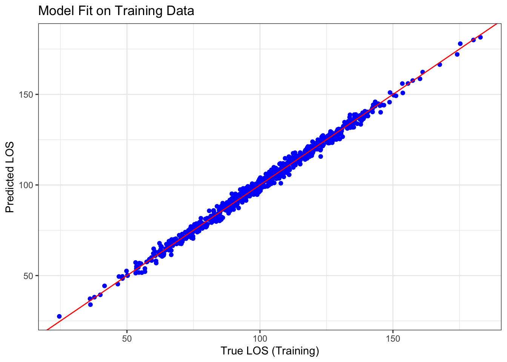
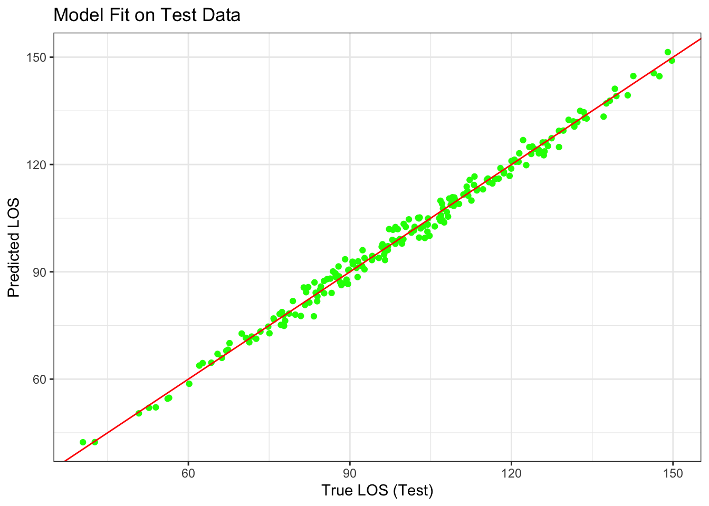
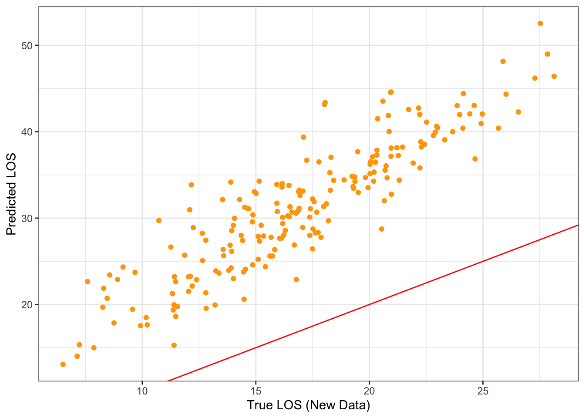
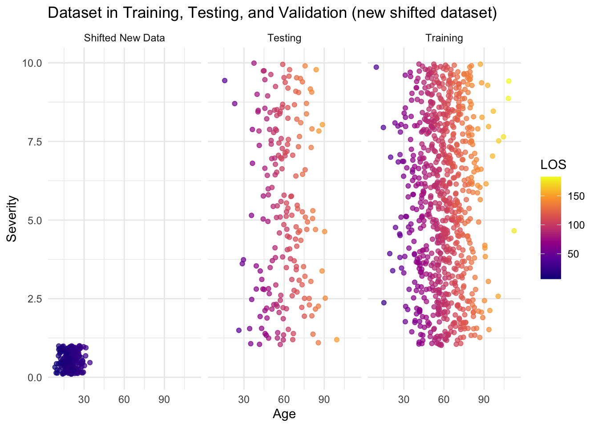

# Load necessary libraries
library(tidymodels)ML pipeline example R
- Dataset
- Splitting into train and test sets
- Fitting linear regression algorithm in train
- Evaluating algorithm in both train and test sets (compare predctions to true labels through metric RMSE) - https://yardstick.tidymodels.org/reference/rmse.html
As an extra:
- What happens if now we have a very different dataset? (pandemic has happened and we now have much younger patients coming in). The model no longer holds and we can detect it by comparing the evaluation metrics.
# Set seed for reproducibility
set.seed(42)# Generate initial healthcare data
age <- rnorm(1000, mean = 60, sd = 15) # Patient age
severity <- runif(1000, 1, 10) # Illness severity score (1-10)
noise <- rnorm(1000, mean = 0, sd = 2) # Random noise
LOS <- 1.5 * age + 2 * severity + noise # Linear relationship - normally would not have this! THis is what we are trying to find out!
# Create a data frame
data <- data.frame(Age = age, Severity = severity, LOS = LOS)# Split data into training and test sets using tidymodels
data_split <- initial_split(data, prop = 0.8, strata = LOS)
train <- training(data_split)
test <- testing(data_split)
# Define a linear regression model
lm_model <- linear_reg() %>%
set_engine("lm") %>%
set_mode('regression')
lm_fit <- lm_model %>%
fit(LOS ~ Age + Severity, data = train)# Calculate RMSE for training and test sets
train_rmse <- train_preds %>%
metrics(truth = LOS, estimate = .pred) %>%
filter(.metric == "rmse")
test_rmse <- test_preds %>%
metrics(truth = LOS, estimate = .pred) %>%
filter(.metric == "rmse")
cat("RMSE on Training Set:", train_rmse$.estimate, "\n")RMSE on Training Set: 2.000701 cat("RMSE on Test Set:", test_rmse$.estimate, "\n")RMSE on Test Set: 1.989802 EXTRA! We will now create a new dataset, with different underlying model, with data that was not captured in original.
# Simulate a more extreme shift in the data distribution (different reality, model building it up)
# Much younger patients with almost negligible severity scores
age_new <- rnorm(200, mean = 20, sd = 5) # Significantly younger patients
severity_new <- runif(200, 0.1, 1) # Minimal severity
noise_new <- rnorm(200, mean = 0, sd = 2)
LOS_new <- 0.8 * age_new + 1.3 * severity_new + noise_new #Different underlying model!
# Create a new dataset with highly shifted distribution
new_data <- data.frame(Age = age_new, Severity = severity_new, LOS = LOS_new)# Predict on the new data
new_preds <- lm_fit %>%
predict(new_data = new_data) %>%
bind_cols(new_data)
# Calculate RMSE for the new, shifted data
new_rmse <- new_preds %>%
metrics(truth = LOS, estimate = .pred) %>%
filter(.metric == "rmse")
cat("RMSE on New Data (Highly Shifted Distribution):", new_rmse$.estimate, "\n")RMSE on New Data (Highly Shifted Distribution): 14.93945 # Plot: Model Fit on Training Data
ggplot(train_preds, aes(x = LOS, y = .pred)) +
geom_point(color = "blue") +
geom_abline(intercept = 0, slope = 1, color = "red") +
labs(title = "Model Fit on Training Data",
x = "True LOS (Training)", y = "Predicted LOS") +
theme_bw()
# Plot: Model Fit on Test Data
ggplot(test_preds, aes(x = LOS, y = .pred)) +
geom_point(color = "green") +
geom_abline(intercept = 0, slope = 1, color = "red") +
labs(title = "Model Fit on Test Data",
x = "True LOS (Test)", y = "Predicted LOS") +
theme_bw()
# Plot: Model Fit on New Data (Highly Shifted Distribution)
ggplot(new_preds, aes(x = LOS, y = .pred)) +
geom_point(color = "orange") +
geom_abline(intercept = 0, slope = 1, color = "red") +
labs(
x = "True LOS (New Data)", y = "Predicted LOS") +
theme_bw()
train$Dataset <- "Training"
test$Dataset <- "Testing"
new_data$Dataset <- "Shifted New Data"
# Combine all datasets into one for plotting
combined_data <- rbind(train, test, new_data)
# Plot all datasets
ggplot(combined_data, aes(x = Age, y = Severity, color = LOS)) +
geom_point(alpha = 0.7) +
facet_wrap(~ Dataset) +
scale_color_viridis_c(option = "plasma") + # Use a colour scale for LOS
labs(
title = "Dataset in Training, Testing, and Validation (new shifted dataset)",
x = "Age",
y = "Severity",
color = "LOS"
) +
theme_minimal()
Check out all other models available: https://www.tidymodels.org/find/parsnip/ Can you try out a different model?
Back to top